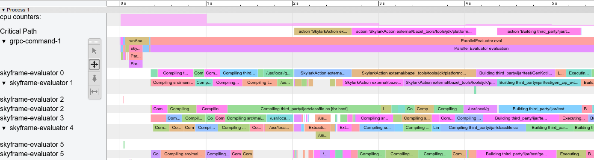

When writing rules, the most common performance pitfall is to traverse or copy data that is accumulated from dependencies. When aggregated over the whole build, these operations can easily take O(N^2) time or space. To avoid this, it is crucial to understand how to use depsets effectively.
This can be hard to get right, so Bazel also provides a memory profiler that assists you in finding spots where you might have made a mistake. Be warned: The cost of writing an inefficient rule may not be evident until it is in widespread use.
ctx.actions.args() for command linesWhenever you are rolling up information from rule dependencies you should use depsets. Only use plain lists or dicts to publish information local to the current rule.
A depset represents information as a nested graph which enables sharing.
Consider the following graph:
C -> B -> A
D ---^
Each node publishes a single string. With depsets the data looks like this:
a = depset(direct=['a'])
b = depset(direct=['b'], transitive=[a])
c = depset(direct=['c'], transitive=[b])
d = depset(direct=['d'], transitive=[b])
Note that each item is only mentioned once. With lists you would get this:
a = ['a']
b = ['b', 'a']
c = ['c', 'b', 'a']
d = ['d', 'b', 'a']
Note that in this case 'a' is mentioned four times! With larger graphs this
problem will only get worse.
Here is an example of a rule implementation that uses depsets correctly to publish transitive information. Note that it is OK to publish rule-local information using lists if you want since this is not O(N^2).
MyProvider = provider()
def _impl(ctx):
my_things = ctx.attr.things
all_things = depset(
direct=my_things,
transitive=[dep[MyProvider].all_things for dep in ctx.attr.deps]
)
...
return [MyProvider(
my_things=my_things, # OK, a flat list of rule-local things only
all_things=all_things, # OK, a depset containing dependencies
)]
See the depset overview page for more information.
depset.to_list()You can coerce a depset to a flat list using
to_list(), but doing so usually results in O(N^2)
cost. If at all possible, avoid any flattening of depsets except for debugging
purposes.
A common misconception is that you can freely flatten depsets if you only do it
at top-level targets, such as an <xx>_binary rule, since then the cost is not
accumulated over each level of the build graph. But this is still O(N^2) when
you build a set of targets with overlapping dependencies. This happens when
building your tests //foo/tests/..., or when importing an IDE project.
depsetCalling depset inside a loop is often a mistake. It can lead to depsets with
very deep nesting, which perform poorly. For example:
x = depset()
for i in inputs:
# Do not do that.
x = depset(transitive = [x, i.deps])
This code can be replaced easily. First, collect the transitive depsets and merge them all at once:
transitive = []
for i in inputs:
transitive.append(i.deps)
x = depset(transitive = transitive])
This can sometimes be reduced using a list comprehension:
x = depset(transitive = [i.deps for i in inputs])
ctx.actions.args() for command linesWhen building command lines you should use ctx.actions.args(). This defers expansion of any depsets to the execution phase.
Apart from being strictly faster, this will reduce the memory consumption of your rules – sometimes by 90% or more.
Here are some tricks:
Pass depsets and lists directly as arguments, instead of flattening them
yourself. They will get expanded by ctx.actions.args() for you.
If you need any transformations on the depset contents, look at
ctx.actions.args#add to see if anything fits the bill.
Are you passing File#path as arguments? No need. Any
File is automatically turned into its
path, deferred to expansion time.
Avoid constructing strings by concatenating them together. The best string argument is a constant as its memory will be shared between all instances of your rule.
If the args are too long for the command line an ctx.actions.args() object
can be conditionally or unconditionally written to a param file using
ctx.actions.args#use_param_file. This is
done behind the scenes when the action is executed. If you need to explicitly
control the params file you can write it manually using
ctx.actions.write.
Example:
def _impl(ctx):
...
args = ctx.actions.args()
file = ctx.declare_file(...)
files = depset(...)
# Bad, constructs a full string "--foo=<file path>" for each rule instance
args.add("--foo=" + file.path)
# Good, shares "--foo" among all rule instances, and defers file.path to later
# It will however pass ["--foo", <file path>] to the action command line,
# instead of ["--foo=<file_path>"]
args.add("--foo", file)
# Use format if you prefer ["--foo=<file path>"] to ["--foo", <file path>]
args.add(format="--foo=%s", value=file)
# Bad, makes a giant string of a whole depset
args.add(" ".join(["-I%s" % file.short_path for file in files])
# Good, only stores a reference to the depset
args.add_all(files, format_each="-I%s", map_each=_to_short_path)
# Function passed to map_each above
def _to_short_path(f):
return f.short_path
When building an action using ctx.actions.run, do not
forget that the inputs field accepts a depset. Use this whenever inputs are
collected from dependencies transitively.
inputs = depset(...)
ctx.actions.run(
inputs = inputs, # Do *not* turn inputs into a list
...
)
To profile your code and analyze the performance you have two options:
--profile flag and the analyze-profile command, or--experimental_generate_json_trace_profile flag and load the
resulting JSON profile in chrome://tracing (recommended).This profiling method consists of two steps, first you have to execute your
build/test with the --profile flag, for example
$ bazel build --nobuild --profile=/tmp/prof //path/to:target
The file generated (in this case /tmp/prof) is a binary file, which can be
postprocessed and analyzed by the analyze-profile command:
$ bazel analyze-profile /tmp/prof
By default, it prints summary analysis information for the specified profile datafile. This includes cummaltive statistics for different task types for each build phase and an analysis of the critical path.
The first section of the default output is an overview of the time spent on the different build phases:
=== PHASE SUMMARY INFORMATION ===
Total launch phase time 978 ms 2.67%
Total init phase time 178 ms 0.49%
Total loading phase time 381 ms 1.04%
Total analysis phase time 2.618 s 7.15%
Total preparation phase time 46.0 ms 0.13%
Total execution phase time 32.366 s 88.46%
Total finish phase time 19.3 ms 0.05%
Total run time 36.586 s 100.00%
The following sections show the execution time of different tasks happening during that particular phase, for example:
=== EXECUTION PHASE INFORMATION ===
Total preparation time 46.0 ms
Total execution phase time 32.366 s
Total time finalizing build 19.3 ms
Actual execution time 32.366 s
Total time (across all threads) spent on:
Type Total Count Average
ACTION 0.01% 131 0.44 ms
ACTION_EXECUTE 31.72% 131 2.635 s
INFO 0.00% 10 1.32 ms
VFS_STAT 0.02% 32187 0.01 ms
VFS_DIR 0.01% 4401 0.02 ms
VFS_READLINK 0.00% 6 0.01 ms
VFS_MD5 0.50% 4652 1.16 ms
VFS_DELETE 0.02% 9336 0.03 ms
VFS_OPEN 0.01% 4706 0.01 ms
VFS_READ 0.06% 182413 0.00 ms
VFS_WRITE 0.01% 17691 0.00 ms
WAIT 16.12% 544 322 ms
SKYFRAME_EVAL 2.97% 1 32.343 s
SKYFUNCTION 48.59% 57301 9.23 ms
The last section shows the critical path:
Critical path (31.410 s):
Id Time Percentage Description
132283 1.219 s 3.88% action 'Executing genrule //src bazel-bin'
132282 13.591 s 43.27% action 'Executing genrule //src package-zip'
132281 1.263 s 4.02% action 'Executing genrule //src install_base_key-file'
132280 381 ms 1.21% action 'Building deploy jar src/main/java/com/google/devtools/build/lib/bazel/BazelServer_deploy.jar'
132279 1.10 ms 0.00% runfiles for //src/main/java/com/google/devtools/build/lib bazel/BazelServer
132278 398 ms 1.27% action 'Building Java resource jar'
132277 8.292 s 26.40% action 'Building src/main/java/com/google/devtools/build/lib/libbazel-rules-class.jar (133 source files) and running annotation processors (AutoCodecProcessor, OptionProcessor, AutoAnnotationProcessor, AutoValueProcessor)'
...
You can use the following options to display more detailed information:
--dump=text: Print all recorded tasks in the order they occurred.--dump=raw: Use this for automated analysis with scripts.--html: Writes a file called <profile-file>.html in the directory of the
profile file. Open it in you browser to see a Gantt type chart that displays
time on the horizontal axis and threads of execution along the vertical axis.--html_details: Renders a more detailed execution chart. Beware that this
increases file size and browser load considerably.When you add the flag --experimental_generate_json_trace_profile to your Bazel
invocations, Bazel will write a JSON profile in Chrome Trace
Format.
We suggest to use the flag together with the following flags:
--experimental_json_trace_compression: The profile will be compressed with
gzip.--experimental_profile_cpu_usage: Bazel will measure and include local CPU
usage in the JSON profile.Example usage:
$ bazel build --experimental_generate_json_trace_profile --experimental_profile_cpu_usage //third_party/zlib/...
INFO: Writing tracer profile to '/home/johndoe/.cache/bazel/_bazel_twerth/f01bc937da326f5bb0feb15c854c110c/command.profile'
INFO: Invocation ID: 34995931-ef6f-4838-9ab1-9a0bc39a8712
INFO: Analysed 3 targets (7 packages loaded, 316 targets configured).
INFO: Found 3 targets...
INFO: Elapsed time: 1.223s, Critical Path: 0.27s
INFO: 17 processes: 17 linux-sandbox.
INFO: Build completed successfully, 20 total actions
The resulting profile file
(/home/johndoe/.cache/bazel/_bazel_twerth/f01bc937da326f5bb0feb15c854c110c/command.profile
in this case; can be configured by the --profile=<path> flag) can then be
loaded and viewed in Chrome. For this, open chrome://tracing in a new tab,
click Load and pick the profile file.
Example profile: 
The top row (‘cpu counters’) shows the local CPU usage, which is high in this build during the analysis phase and then gets lower during execution. The second row (‘Critical Path’) refers to the critical path of the build, that is even with infinite parallelism the build would not be faster than the actions in this path. The third row (‘grpc-command-1’) displays everything that’s happening on Bazel’s main thread, giving a high level overview of what Bazel is doing. The remaining rows show what the worker threads are doing.
You can interact with the profile, for example zoom in, inspect particular tasks,
filter for task descriptions and select multiple tasks to get an overview. Press
? to get an overview of what you can do.
When analyzing these kind of profiles look for the following:
Note that we filter out fast tasks and certain task types completely to keep the profile files small enough to render fast in the Chrome Trace Viewer.
Bazel comes with a built-in memory profiler that can help you check your rule’s memory use. If there is a problem you can dump the heap to find the exact line of code that is causing the problem.
You must pass these two startup flags to every Bazel invocation:
STARTUP_FLAGS=\
--host_jvm_args=-javaagent:$(BAZEL)/third_party/allocation_instrumenter/java-allocation-instrumenter-3.0.1.jar \
--host_jvm_args=-DRULE_MEMORY_TRACKER=1
NOTE: The bazel repository comes with an allocation instrumenter. Make sure to adjust ‘$(BAZEL)’ for your repository location.
These start the server in memory tracking mode. If you forget these for even one Bazel invocation the server will restart and you will have to start over.
Let’s have a look at the target foo and see what it’s up to. We add
--nobuild since it doesn’t matter to memory consumption if we actually build
or not, we just have to run the analysis phase.
$ bazel $(STARTUP_FLAGS) build --nobuild //foo:foo
Let’s see how much memory the whole Bazel instance consumes:
$ bazel $(STARTUP_FLAGS) info used-heap-size-after-gc
> 2594MB
Let’s break it down by rule class by using bazel dump --rules:
$ bazel $(STARTUP_FLAGS) dump --rules
>
RULE COUNT ACTIONS BYTES EACH
genrule 33,762 33,801 291,538,824 8,635
config_setting 25,374 0 24,897,336 981
filegroup 25,369 25,369 97,496,272 3,843
cc_library 5,372 73,235 182,214,456 33,919
proto_library 4,140 110,409 186,776,864 45,115
android_library 2,621 36,921 218,504,848 83,366
java_library 2,371 12,459 38,841,000 16,381
_gen_source 719 2,157 9,195,312 12,789
_check_proto_library_deps 719 668 1,835,288 2,552
... (more output)
And finally let’s have a look at where the memory is going by producing a
pprof file using bazel dump --skylark_memory:
$ bazel $(STARTUP_FLAGS) dump --skylark_memory=$HOME/prof.gz
> Dumping skylark heap to: /usr/local/google/home/$USER/prof.gz
Next, we use the pprof tool to investigate the heap. A good starting point is
getting a flame graph by using pprof -flame $HOME/prof.gz.
You can get pprof from https://github.com/google/pprof.
In this case we get a text dump of the hottest call sites annotated with lines:
$ pprof -text -lines $HOME/prof.gz
>
flat flat% sum% cum cum%
146.11MB 19.64% 19.64% 146.11MB 19.64% android_library <native>:-1
113.02MB 15.19% 34.83% 113.02MB 15.19% genrule <native>:-1
74.11MB 9.96% 44.80% 74.11MB 9.96% glob <native>:-1
55.98MB 7.53% 52.32% 55.98MB 7.53% filegroup <native>:-1
53.44MB 7.18% 59.51% 53.44MB 7.18% sh_test <native>:-1
26.55MB 3.57% 63.07% 26.55MB 3.57% _generate_foo_files /foo/tc/tc.bzl:491
26.01MB 3.50% 66.57% 26.01MB 3.50% _build_foo_impl /foo/build_test.bzl:78
22.01MB 2.96% 69.53% 22.01MB 2.96% _build_foo_impl /foo/build_test.bzl:73
... (more output)